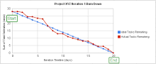

<table style="border-style:double" border="5" cellpadding="30" cellspacing="3">
	<tr class="title" id="1">
		<td>開始時間</td>
		<td>過了幾天</td>
		<td>已完成</td>
		<td>未完成</td>
		<td>剩餘天數</td>
	</tr>
	<tr id="2">
		<td>2015/11/16</td>
		<td>10</td>
		<td>6</td>
		<td>4</td>
		<td>12</td>
	</tr>	
</table>
			<style type="text/css" media="screen">
			li{
				border-style: none none solid none;
			}
</style>

<ul>
	<li>完成</li>
	</ul>
			<ul>
				<li><span class="id">1</span><span>task1</span></li>
				<li><span class="id">2</span><span>task2</span></li>
				<li><span class="id">3</span><span>task3</span></li>
				<li><span class="id">4</span><span>task4</span></li>
				<li><span class="id">5</span><span>task5</span></li>
				<li><span class="id">6</span><span>task6</span></li>
			</ul>
			<ul>
				<li>未完成</li>
			</ul>
			<ul>
				<li><span class="id">7</span><span>finish1</span></li>
				<li><span class="id">8</span><span>finish2</span></li>
				<li><span class="id">9</span><span>finish3</span></li>
				<li><span class="id">10</span><span>finish4</span></li>
			</ul>
			